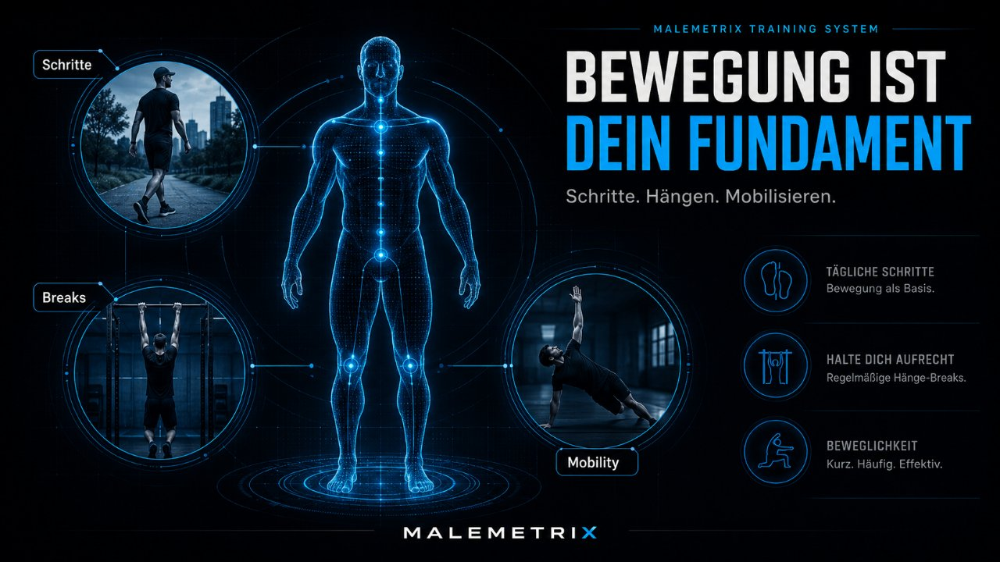
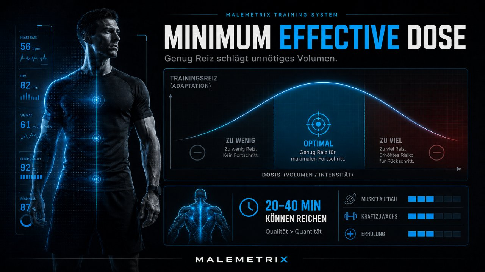
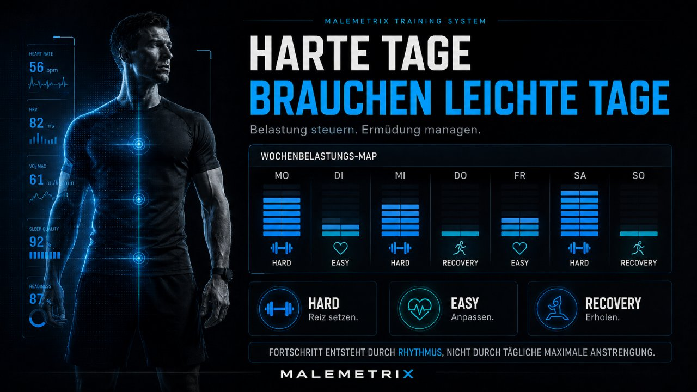
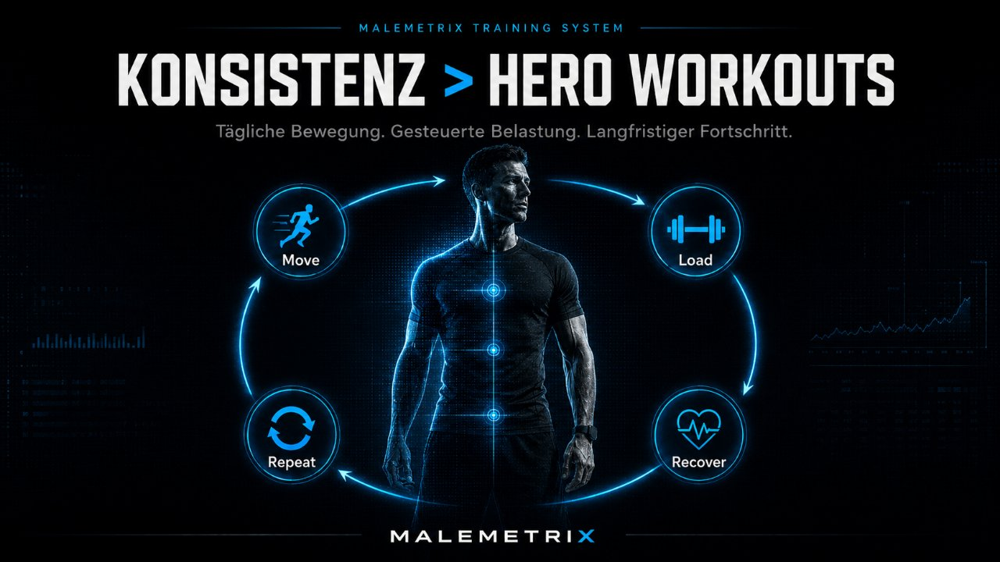
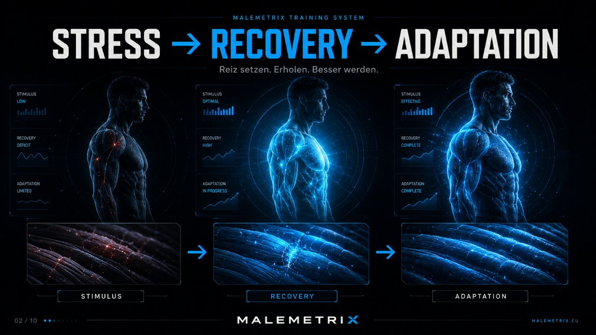
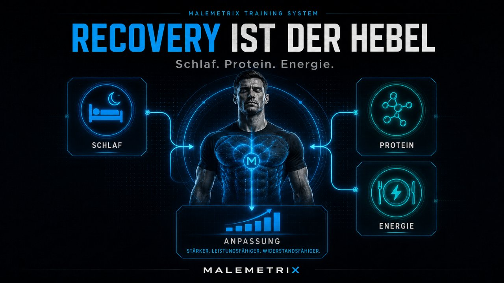
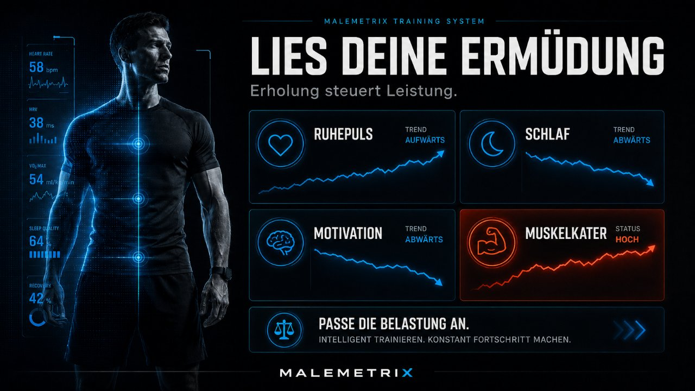

Inhalt
- Das Problem mit „3× die Woche"
- Die Lösung: täglich statt selten
- Warum täglich paradox leichter ist
- Die Gewohnheitsschleife: Cue → Routine → Reward
- Identität schlägt Ziel
- Dopamin ehrlich: Motivation folgt der Handlung
- Die zwei Ebenen des Systems
- Das tägliche 25–30-Minuten-Training
- NEAT & Schritte: der unterschätzte Stoffwechsel-Hebel
- Bewegung als Stress- & Stimmungsregulation
- Die Gym-Tage: Push / Pull / Legs
- Bewegen ≠ zerstören: 3 harte + 4 leichte Tage
- Konstanz schlägt Perfektion — der Mechanismus
- Regeneration & Autoregulation
- Dranbleiben: Streak, Friktion, Habit Stacking
- Der Wenn-dann-Notfallplan für stressige Tage
- Dein 7-Tage-Wochenrhythmus & Start
- Sicherheit & Arzt
Das Problem mit „3× die Woche"
„Ab nächster Woche trainiere ich dreimal." Klingt vernünftig, machbar, moderat. Und trotzdem scheitern genau an diesem Vorsatz unzählige Männer — Woche für Woche. Nicht aus Faulheit, sondern wegen eines eingebauten Konstruktionsfehlers.
Das Problem ist die Flexibilität. „Dreimal die Woche" heißt: an vier Tagen darfst du nicht trainieren — und an jedem einzelnen Tag ist „heute nicht" eine völlig legitime Antwort. Montag schiebst du es („ich hab ja noch sechs Tage"). Dienstag auch. Mittwoch kommt was dazwischen. Donnerstag merkst du: jetzt müsstest du drei Einheiten in drei Tage quetschen — Druck, schlechtes Gewissen, und am Ende landest du bei einer statt drei. Oder bei null.
Dahinter steckt ein gut untersuchter Denkfehler des Gehirns: Entscheidungen kosten Energie. Jedes Mal, wenn ein Verhalten nicht feststeht, sondern neu abgewogen werden muss, tritt der präfrontale Kortex gegen das limbische System an — Vernunft gegen sofortige Bequemlichkeit. Der Sofort-Impuls („Couch jetzt") ist biologisch fast immer im Vorteil, weil das Gehirn nahe Belohnungen stärker gewichtet als ferne. Ein flexibler Plan lädt dieses Duell jeden einzelnen Tag neu — und du verlierst es an den meisten Tagen.
Der zweite Konstruktionsfehler: „3× die Woche" wird nie zur Gewohnheit, weil es kein stabiles Muster hat. Mal Montag/Mittwoch/Freitag, mal Dienstag/Samstag/Sonntag — der Auslöser wechselt ständig. Ein Verhalten, das an keinen festen Reiz gekoppelt ist, bleibt für immer eine bewusste Entscheidung. Und bewusste Entscheidungen sind genau das, was an stressigen Tagen zuerst wegbricht.
Die Lösung: täglich statt selten
Die Lösung klingt erst einmal nach mehr, ist in Wahrheit aber nach weniger Widerstand: Trainiere jeden Tag. Sieben Tage die Woche, jeweils 25–30 Minuten. Und davon gehst du an drei Tagen ins Fitnessstudio — dein 3-Tage-System als Push / Pull / Legs — und trainierst dort richtig hart, bis nahe ans Muskelversagen.
Der Trick steckt nicht im Volumen, sondern in der Entscheidung, die wegfällt. Die Frage „Trainiere ich heute?" stellt sich nicht mehr — die Antwort ist immer Ja. Damit verschwindet die tägliche Verhandlung, und mit ihr das Aufschieben. Es gibt kein „morgen", auf das du etwas schieben könntest, denn morgen trainierst du sowieso.
Das ist mehr als ein rhetorischer Kniff. Ein Verhalten, das keine Ausnahme kennt, ist mental billiger als eines mit Ausnahmen. „Manchmal" zwingt das Gehirn, jedes Mal neu zu prüfen, ob heute so ein „manchmal" ist. „Immer" schaltet diese Prüfung ab. Genau deshalb fühlt sich die härtere Regel — täglich — im Alltag leichter an als die weichere Regel — dreimal.
Warum täglich paradox leichter ist
Es wirkt widersinnig: Sieben Einheiten sollen leichter durchzuhalten sein als drei? Ja — und zwar aus drei Gründen, die alle in der Verhaltensphysiologie gut verstanden sind:
- Gewohnheit schlägt Motivation. Was du jeden Tag zur gleichen Zeit tust, wandert vom bewussten Handeln in automatisierte Muster — neurologisch grob von präfrontalen Arealen in die Basalganglien. Du brauchst keine Willenskraft mehr, sobald das Verhalten diese Verlagerung durchlaufen hat. „Dreimal die Woche" schafft diese Verlagerung nie, weil das Muster jede Woche neu ausgehandelt wird.
- Ein klarer Anker. Tägliches Training bekommt einen festen Platz (z. B. direkt morgens oder unmittelbar nach der Arbeit). Gleicher Auslöser, gleiche Zeit → das Verhalten läuft von selbst an, noch bevor die innere Ausrede formuliert ist.
- Die Hürde ist kleiner. 25–30 Minuten fühlen sich nicht nach „großem Workout" an, das man erst mental durchplanen muss. Niedrige Einstiegshürde = du fängst überhaupt an. Und Anfangen ist 90 % der Miete.
Der schwierigste Teil am Sport ist fast nie die Anstrengung — es ist die Entscheidung, anzufangen. Tägliches Training löscht diese Entscheidung. Genau darin liegt seine Kraft. Die restlichen Kapitel zeigen, warum das nicht Bauchgefühl ist, sondern der Mechanismus, mit dem sich Verhalten dauerhaft verankert.
Die Gewohnheitsschleife: Cue → Routine → Reward
Jede stabile Gewohnheit läuft über dieselbe dreiteilige Schleife. Wer sie versteht, kann Training so verdrahten, dass es irgendwann von allein losgeht — wie Zähneputzen, über das niemand mehr nachdenkt.
| Element | Was es ist | Beim Training |
|---|---|---|
| Cue (Auslöser) | Der Reiz, der das Verhalten anstößt — Zeit, Ort, ein vorheriges Ereignis | „Nach dem Aufstehen", „sobald ich von der Arbeit heimkomme", „wenn der Kaffee durchläuft" |
| Routine (Handlung) | Das Verhalten selbst — klein und klar definiert | 25–30 Min Bewegung oder die Gym-Einheit |
| Reward (Belohnung) | Das Signal ans Gehirn, dass sich die Routine gelohnt hat | Erledigt-Haken, besseres Gefühl, Streak verlängert, kurzer Wohlfühl-Kick nach Bewegung |
Der entscheidende und meist übersehene Teil ist der Cue. Die meisten Menschen arbeiten nur an der Routine („ich sollte mehr trainieren") und wundern sich, dass nichts hält. Ohne verlässlichen Auslöser bleibt jedes Verhalten Zufall. Ein guter Cue ist konkret, unvermeidlich und passiert sowieso jeden Tag — deshalb funktioniert „nach dem morgendlichen Kaffee" besser als „irgendwann nachmittags".
Der Reward schließt die Schleife und sagt dem dopaminergen System: „Dieses Muster wiederholen." Je unmittelbarer die Belohnung, desto schneller verfestigt sich das Verhalten. Deshalb ist ein sichtbarer Streak-Kalender oder ein abgehakter Tag kein Kinderkram, sondern ein funktionierendes Belohnungssignal — er macht den langfristigen Nutzen (Fitness in Monaten) sofort erlebbar.
Identität schlägt Ziel
Ziele haben ein Verfallsdatum. „10 Kilo runter", „einmal wieder Klimmzüge" — sobald erreicht (oder aussichtslos), fällt der Antrieb weg. Deshalb kippen so viele Menschen nach dem Erreichen eines Ziels zurück in alte Muster. Der stabilere Hebel ist nicht das Ziel, sondern die Identität.
Der Unterschied ist fundamental: Ein Ziel richtet sich auf ein Ergebnis („ich will abnehmen"), eine Identität auf ein Selbstbild („ich bin jemand, der jeden Tag trainiert"). Verhalten, das aus dem Selbstbild kommt, braucht keine Motivation mehr — es ist einfach, wer du bist. Und das Gehirn arbeitet hart daran, im Einklang mit dem eigenen Selbstbild zu bleiben (kognitive Konsistenz). Ein Nicht-Trainings-Tag fühlt sich dann nicht wie „faul", sondern wie „nicht ich" an — ein weit stärkerer innerer Widerstand als jeder Vorsatz.
Der Weg dahin führt genau umgekehrt zur Intuition: Nicht erst überzeugt sein und dann handeln — sondern handeln und dadurch überzeugt werden. Jede einzelne Einheit ist ein Stimmzettel für die Identität „ich trainiere". Ein einzelner Tag ändert nichts. Aber hundert Tage sind hundert Belege, die dein Gehirn sammelt, bis das Selbstbild nicht mehr wegzudiskutieren ist. Genau darum ist die tägliche Frequenz so mächtig: Sie liefert die meisten Stimmzettel in der kürzesten Zeit.
Dopamin ehrlich: Motivation folgt der Handlung
Der größte Denkfehler beim Dranbleiben lautet: „Ich warte, bis ich Lust habe." Diese Reihenfolge stimmt biologisch nicht. Motivation ist selten die Ursache der Handlung — meist ist sie ihre Folge. Der Antrieb kommt in Gang, sobald man anfängt, nicht davor. Wer auf die Lust wartet, wartet an den meisten Tagen vergeblich; wer die ersten fünf Minuten einfach macht, hat die Lust danach oft geschenkt.
Dopamin ist dabei nicht das „Belohnungshormon", als das es oft verkauft wird, sondern in erster Linie ein Molekül der Motivation und des Wollens — es treibt vor der Belohnung zum Handeln und markiert, welche Handlungen sich wiederholen lohnen. Bewegung, ein abgehakter Tag und ein sichtbarer Fortschritt setzen genau diese Signale. Über Wochen koppelt das Gehirn die anfängliche Anstrengung an die Belohnung — und der Einstieg fällt spürbar leichter.
Ebenso wichtig ist die Dopamin-Baseline, also dein Grundpegel an Antrieb. Ständige, mühelose Reize aus dem Handy — endloses Scrollen, kurze Kicks im Sekundentakt — halten diesen Pegel künstlich hoch und lassen alles Anstrengende danach flach und unlohnend wirken. Das ist einer der Gründe, warum Training „keinen Bock macht": nicht weil es schlecht wäre, sondern weil billige Reize die Messlatte verstellt haben. Bewegung wirkt hier gegenläufig — sie hebt den Antrieb über eine ehrliche, verdiente Route und lässt die Baseline über die Zeit gesünder pendeln.
Die zwei Ebenen des Systems
Damit „jeden Tag" nicht in Dauer-Erschöpfung endet, arbeitet das System auf zwei klar getrennten Ebenen:
| Ebene | Was | Zweck |
|---|---|---|
| Tägliches Minimum | 7×/Woche, 25–30 Min, leicht bis moderat | Gewohnheit, Grundfitness, Dranbleiben |
| Gym-Einheiten | 3×/Woche als Push/Pull/Legs, bis nahe Muskelversagen | Kraft- & Muskelreiz, sichtbarer Fortschritt |
Die tägliche Ebene ist die Versicherung gegen das Aufschieben — sie hält dich in Bewegung und in der Identität „ich trainiere". Die Gym-Ebene liefert den eigentlichen Wachstumsreiz, der Muskeln und Kraft aufbaut. Beide zusammen ergeben mehr als ihre Summe: Konstanz und Intensität.
Diese Trennung ist kein Detail, sondern der Grund, warum tägliches Training überhaupt gesund ist. Würdest du jeden Tag mit voller Intensität trainieren, würde die fehlende Erholung deinen Fortschritt auffressen. Weil aber vier von sieben Tagen bewusst leicht sind, bleibt genug Regenerationsspielraum — und die drei harten Tage setzen einen klaren, isolierten Reiz. Kapitel 12 vertieft, warum genau diese Verteilung der Schlüssel ist.
Das tägliche 25–30-Minuten-Training
An den Tagen ohne Gym ist das Ziel nicht Erschöpfung, sondern Bewegung und Gewohnheit. 25–30 Minuten, moderat, ohne dich auszupowern. Bausteine, aus denen du frei wählst:
| Baustein | Beispiel |
|---|---|
| Zügiges Gehen / Cardio | flotter Spaziergang, Rad, lockeres Joggen |
| Eigengewicht-Zirkel | Liegestütze, Kniebeugen, Ausfallschritte, Plank |
| Mobilität & Dehnen | Hüfte, Schultern, Rücken — gegen Schreibtisch-Steifheit |
| Core | Bauch, unterer Rücken, Rumpfstabilität |
Ein großer Teil dieser Bewegung darf bewusst im lockeren Bereich liegen — dem sogenannten Zone-2-Tempo, bei dem du noch in ganzen Sätzen sprechen könntest. Dieser Bereich ist kein „zu wenig", sondern trainiert gezielt die Fähigkeit deiner Muskeln, Energie effizient aus Fett zu gewinnen, und baut die Grundlagenausdauer auf, die schwerere Einheiten überhaupt tragbar macht. Genau weil er nicht erschöpft, kannst du ihn täglich abrufen.
NEAT & Schritte: der unterschätzte Stoffwechsel-Hebel
Der am stärksten unterschätzte metabolische Hebel steht in keinem Trainingsplan: NEAT — Non-Exercise Activity Thermogenesis, also alles, was du außerhalb bewusster Trainingseinheiten an Bewegung machst. Gehen, Stehen, Treppen, Zappeln, Einkäufe schleppen, herumlaufen beim Telefonieren. Bei vielen Menschen macht NEAT über den Tag einen deutlich größeren Anteil am Kalorienverbrauch aus als die eigentliche Sporteinheit — und er ist genau der Posten, der bei Schreibtischarbeit fast auf null fällt.
Das ist der Grund, warum jemand mit einer Stunde Gym pro Tag, aber ansonsten 14 Stunden Sitzen, stoffwechseltechnisch oft schlechter dasteht als jemand, der nie „richtig" trainiert, aber ständig in Bewegung ist. Der Körper reguliert NEAT zudem heimlich herunter, wenn Kalorien knapp werden — man wird unbewusst träger. Wer bewusst Schritte sammelt, hält diesen Hebel offen.

| Schritte pro Tag | Grobe Einordnung |
|---|---|
| unter ~4.000 | überwiegend sitzend, metabolisch ungünstig |
| ~7.000–8.000 | Bereich, ab dem sich in Beobachtungsdaten die deutlichsten Gesundheitsvorteile zeigen |
| ~10.000+ | aktiver Lebensstil; darüber flacht der Zusatznutzen ab |
Die berühmten „10.000 Schritte" sind ursprünglich ein Marketing-Wert und keine magische Schwelle — die Datenlage deutet darauf hin, dass der größte Sprung im Gesundheitsnutzen schon deutlich früher passiert. Die Botschaft ist trotzdem klar: mehr Alltagsbewegung ist einer der billigsten, verlässlichsten Hebel für Stoffwechsel, Blutzuckerregulation und Körperzusammensetzung — und das tägliche Minimum aus Kapitel 8 zahlt direkt darauf ein.
Bewegung als Stress- & Stimmungsregulation
Training ist nicht nur ein Werkzeug für Muskeln, sondern eines der wirksamsten Mittel zur Regulation von Stress und Stimmung — und genau das macht es an schlechten Tagen so wertvoll. Moderate Bewegung baut überschüssiges Stresshormon ab, senkt die Grundanspannung des Nervensystems und schüttet Botenstoffe aus, die die Stimmung heben. Der Effekt ist so verlässlich, dass Bewegung in Leitlinien als Baustein gegen depressive Verstimmung geführt wird.
Ein besonders unterschätzter Hebel ist der lockere Spaziergang draußen. Rhythmisches Gehen im niedrigen Zone-2-Bereich beruhigt das autonome Nervensystem, statt es hochzufahren — anders als eine harte Einheit, die kurzfristig zusätzlichen Stress setzt. Deshalb ist ein moderater Spaziergang an einem angespannten Tag oft die klügere Wahl als das Gym.
Kombiniere das mit Tageslicht, und der Effekt verdoppelt sich. Helles Licht im Freien — selbst bei bedecktem Himmel um ein Vielfaches heller als jede Zimmerbeleuchtung — ist das stärkste Signal für deine innere Uhr. Licht am Morgen stabilisiert den Tag-Nacht-Rhythmus, unterstützt einen gesunden morgendlichen Cortisol-Anstieg (der erwünscht ist und wach macht) und verbessert über die richtige Taktung abends den Schlaf. Ein Morgenspaziergang ist damit gleich dreifach wirksam: Bewegung, Stimmung und Rhythmus in einem.
Die Gym-Tage: dein 3-Tage-System als Push / Pull / Legs
Drei feste Gym-Einheiten pro Woche sind dein 3-Tage-System — der Teil, der Kraft und Muskeln aufbaut. Statt jedes Mal denselben Ganzkörperreiz zu setzen, teilst du diese drei Tage sinnvoll in Push / Pull / Legs auf: Drücken, Ziehen, Beine. Drei Tage, drei Schwerpunkte — zusammen decken sie den ganzen Körper ab, und jede Muskelgruppe bekommt eine eigene, fokussierte Einheit.
| Tag | Schwerpunkt | Beispiel-Übungen |
|---|---|---|
| Push (Drücken) | Brust, Schultern, Trizeps | Bankdrücken, Schulterdrücken, Dips, Seitheben |
| Pull (Ziehen) | Rücken, hintere Schulter, Bizeps | Klimmzüge, Rudern, Latzug, Curls |
| Legs (Beine) | Oberschenkel, Po, Waden | Kniebeuge, Kreuzheben/RDL, Beinpresse, Waden |
Jede dieser Einheiten fährst du gezielt hart — bis nahe ans Muskelversagen, also bis nur noch ein, zwei saubere Wiederholungen möglich wären (in der Praxis oft mit „RIR" beschrieben, den Reps in Reserve). Der Wachstumsreiz entsteht vor allem in diesen letzten harten Wiederholungen nahe der Erschöpfung; die vorherigen sind Vorbereitung. Die Prinzipien:

- Grundübungen zuerst: die großen, mehrgelenkigen Übungen (Drücken, Ziehen, Kniebeuge, Kreuzheben) liefern den meisten Ertrag — danach kommen Isolationsübungen.
- Progressive Steigerung: über die Wochen mehr Gewicht oder mehr Wiederholungen. Ohne diese progressive Überlastung kein Wachstum — der Muskel passt sich nur an, was ihn fordert.
- Nahe ans Versagen, mit sauberer Technik: Der letzte harte Satz bringt den Reiz — aber niemals auf Kosten der Form.
- 1–2 harte Sätze pro Übung genügen: Für den Muskelreiz zählt Nähe zum Versagen mehr als endloses Satz-Sammeln. Das hält die Einheit effizient und die Erholung machbar.
Bewegen ≠ zerstören: 3 harte + 4 leichte Tage
Der häufigste Denkfehler beim Wort „täglich": dass jeder Tag ein Kampf sein muss. Das Gegenteil ist richtig. Bewegung ist nicht dasselbe wie Zerstörung. Muskeln und Nervensystem wachsen nicht während der Belastung, sondern in der Erholung zwischen den harten Reizen. Wer jeden Tag zerstört, gibt dem Körper diese Erholung nie — und stagniert trotz maximaler Mühe.
Deshalb die klare Aufteilung: 3 harte Tage, 4 leichte Tage. Die drei Push/Pull/Legs-Einheiten setzen den Wachstumsreiz. Die vier leichten Tage — Gehen, Mobilität, Zone-2, Core — halten die Gewohnheit am Leben, fördern über die bessere Durchblutung sogar die Regeneration und belasten das System kaum. So ist „jeden Tag" nicht nur machbar, sondern gesünder als drei harte Tage plus vier Tage komplettes Nichtstun, weil die aktive Erholung den Körper geschmeidig hält.

| Tagestyp | Intensität | Funktion für den Körper |
|---|---|---|
| Harter Gym-Tag (3×) | hoch, nahe Versagen | Wachstumsreiz für Kraft & Muskel |
| Leichter Bewegungstag (4×) | niedrig bis moderat | aktive Erholung, Durchblutung, Gewohnheit, Stimmung |
Diese Verteilung erlaubt auch Autoregulation: An einem leichten Tag entscheidest du nach Tagesform, ob es ein zügiger Lauf oder ein ruhiger Spaziergang wird. Die Kette bricht nie — nur die Dosis passt sich an. Genau diese Flexibilität in der Intensität (bei fester Frequenz) ist es, die das System nachhaltig macht.
Konstanz schlägt Perfektion — der Mechanismus
„Konstanz schlägt Perfektion" klingt nach Kalenderspruch — ist aber ein rechnerischer Fakt. Kurze Antwort auf „Reichen 25–30 Minuten?": ja, um fit, beweglich und am Ball zu bleiben, völlig. Für Gesundheit, Energie, Grundfitness und Gewohnheit sind tägliche 25–30 Minuten mehr wert als jede selten absolvierte „perfekte" Stunde, die meistens ausfällt. Den Kraft- und Muskelaufbau liefern zusätzlich die 2–3 harten Gym-Einheiten.

Der Mechanismus dahinter ist simpel und unbestechlich: Trainingswirkung ist ein Produkt aus Qualität und Umsetzungsrate — und ein Produkt wird von seinem schwächsten Faktor bestimmt. Rechne es durch:
| Ansatz | Geplant | Reale Umsetzung | Effektiv im Jahr |
|---|---|---|---|
| „Perfekter" Plan, 4×/Woche | ~208 Einheiten | 40 % Umsetzung | ~83 Einheiten |
| Tägliches System, 7×/Woche | ~365 Einheiten | 90 % Umsetzung | ~330 Einheiten |
Der theoretisch schwächere Plan gewinnt am Ende um das Vierfache — nicht weil er besser ist, sondern weil er tatsächlich stattfindet. Dazu kommt der Zinseszins-Effekt von Gewohnheiten: Jede umgesetzte Einheit senkt den Widerstand für die nächste, während jede verpasste ihn erhöht. Konstanz erzeugt Momentum, das sich selbst trägt; unterbrochene Muster müssen jedes Mal von vorn anlaufen.

Regeneration & Autoregulation
Jeden Tag trainieren funktioniert nur, wenn du die Intensität steuerst. Der Körper erholt sich nicht trotz, sondern durch kluge Belastungsverteilung. Die Regeln:

- Harte und leichte Tage abwechseln: Auf einen Gym-Tag bis nahe Versagen folgt idealerweise ein lockerer Tag (Gehen, Mobilität).
- Tägliches Minimum bleibt moderat: Es ist Bewegung, kein zweites Krafttraining.
- Schlaf und Eiweiß: hier passiert der eigentliche Muskelaufbau — nicht im Gym, sondern in der Erholung danach. Ohne ausreichend Schlaf (Reparatur, Hormonhaushalt) und genug Protein (Baustoff) verpufft der beste Reiz.
- Auf den Körper hören: Bist du wirklich ausgelaugt oder krank, ist ein sehr leichter Tag (5–10 Min Mobilität, Spaziergang) der „Null-Tag-Ersatz" — die Gewohnheit bleibt, der Körper erholt sich.
Autoregulation bedeutet: Du hältst die Frequenz fest (jeden Tag etwas) und passt die Intensität an die Tagesform an. Schlecht geschlafen, angeschlagen, gestresst? Dann wird aus dem geplanten Lauf ein Spaziergang, aus der harten Einheit eine technikfokussierte mit weniger Gewicht. Das ist kein Nachgeben, sondern intelligentes Steuern — es hält dich langfristig im Spiel, während stures Durchziehen irgendwann in Verletzung oder Übertraining endet.

Dranbleiben: Streak, Friktion, Habit Stacking
Warum hält dieses System, wo Vorsätze sonst zerbröseln? Weil es die richtigen psychologischen Hebel zieht. Die Kapitel 4 bis 6 haben das Fundament gelegt — hier sind die konkreten Werkzeuge, mit denen du es im Alltag verankerst:
- Brich die Kette nicht. Eine ununterbrochene Serie („Streak") wird zum Wert an sich, den man nicht aufgeben will. Je länger sie ist, desto teurer fühlt sich ihr Verlust an — dieser Verlust-Widerwille ist ein starker, gut belegter Antrieb. Mach den Streak sichtbar (Kalender, Tracker), damit dein Gehirn die Serie tatsächlich „sieht".
- Vermeide den Null-Tag. Keine Zeit, keine Energie? Dann eben nur 10 Minuten — oder fünf. Ein kleiner Tag ist unendlich viel besser als ein Null-Tag, denn der Null-Tag bricht die Gewohnheit, der kleine Tag hält sie am Leben. Der Wert liegt nicht im Trainingsreiz dieser zehn Minuten, sondern darin, dass die Identität und die Kette intakt bleiben.
- Senke die Friktion. Jede Hürde zwischen dir und dem Start kostet Umsetzung. Trainingssachen abends rauslegen, Schuhe an die Tür, Gym-Tasche gepackt im Auto, ein fester Ort. Umgekehrt: Erhöhe die Friktion für die Konkurrenz — Handy in ein anderes Zimmer, bevor du dich hinsetzt. Willenskraft ist unzuverlässig; eine gut gebaute Umgebung nicht.
- Habit Stacking. Kopple die neue Gewohnheit an eine bestehende, die schon fest sitzt: „Nach dem morgendlichen Kaffee ziehe ich die Laufschuhe an." Die alte Gewohnheit wird zum verlässlichen Cue für die neue — du musst keinen neuen Auslöser erfinden, sondern hängst dich an einen, der ohnehin jeden Tag feuert.
- Die Zwei-Minuten-Version. An miesen Tagen reduzierst du das Ziel auf einen lächerlich kleinen Einstieg: „nur die Schuhe anziehen und vor die Tür". Fast immer geht es dann weiter — und selbst wenn nicht, hast du die Gewohnheit bedient. Das Ziel an schweren Tagen ist nicht Leistung, sondern das Verhindern eines Null-Tags.
- Momentum. Konstanz erzeugt Schwung. Nach ein paar Wochen fühlt sich Nicht-Trainieren falsch an — und genau dann hast du gewonnen.
Der Wenn-dann-Notfallplan für stressige Tage
Die meisten Ketten reißen nicht an normalen Tagen, sondern an den Ausnahmetagen: Termin-Chaos, Krankheit, Reise, ein Tag, an dem alles schiefläuft. Wer für diese Tage keinen Plan hat, entscheidet im Stress — und im Stress gewinnt fast immer das Ausfallen. Die Lösung ist ein vorab festgelegter Wenn-dann-Plan (in der Verhaltensforschung als „Implementierungsabsicht" gut belegt): Du legst die Reaktion auf typische Störungen im Voraus fest, sodass im Ernstfall keine Entscheidung mehr nötig ist.
| Wenn … (Situation) | Dann … (feste Reaktion) |
|---|---|
| Ich habe heute keine 25 Minuten | … mache ich 10 Minuten — der Tag zählt trotzdem. |
| Ich habe null Energie / Kopf voll | … gehe ich 15–20 Min zügig draußen spazieren, statt zu trainieren. |
| Ich bin auf Reise / kein Gym | … mache ich einen Eigengewicht-Zirkel im Zimmer (Push-ups, Squats, Plank). |
| Ein harter Gym-Tag fällt aus | … wird er nicht nachgeholt; ich mache das tägliche Minimum und ziehe den nächsten Gym-Tag normal durch. |
| Ich bin leicht erkältet (nur Schnupfen, „über dem Hals") | … mache ich einen ruhigen Spaziergang statt einer harten Einheit. |
| Ich habe Fieber / fühle mich richtig krank | … ist Pause die richtige Wahl; die Kette pausiert bewusst, kein schlechtes Gewissen. |
| Ich habe abends noch nichts gemacht | … ziehe ich sofort die Schuhe an und gehe 10 Min raus, bevor ich mich hinsetze. |
Der Sinn ist nicht, jeden Tag maximal zu trainieren — sondern den Null-Tag zu verhindern, ohne dich an schlechten Tagen zu ruinieren. Ein festgelegtes „dann" nimmt dir die Entscheidung in genau dem Moment ab, in dem du sie am schlechtesten treffen würdest.
Dein 7-Tage-Wochenrhythmus & Start
Ein Beispiel, wie sich das kombinierte System über die Woche legt: jeden Tag Bewegung, die drei harten Tage als Push / Pull / Legs, dazwischen bewusst leichte Tage zur Erholung. Passe es an deinen Rhythmus an — entscheidend ist nur: jeden Tag etwas, davon dreimal hart im Gym, und harte und leichte Tage im Wechsel.
| Tag | Einheit | Typ |
|---|---|---|
| Montag | Gym — Push (Brust/Schultern/Trizeps), bis nahe Versagen | hart |
| Dienstag | 25–30 Min zügiges Gehen (Zone 2) + Mobilität | leicht |
| Mittwoch | Gym — Pull (Rücken/Bizeps), bis nahe Versagen | hart |
| Donnerstag | 25–30 Min Eigengewicht-Zirkel (locker) + Core | leicht |
| Freitag | Gym — Legs (Beine/Po), bis nahe Versagen | hart |
| Samstag | 25–30 Min Cardio (Rad/Joggen, moderat) | leicht |
| Sonntag | Morgenspaziergang draußen, Mobilität, Dehnen | leicht |
Beachte den Rhythmus: Nach jedem harten Tag folgt ein leichter — das ist die aktive Erholung aus Kapitel 12, kein Zufall. Der Morgenspaziergang am Sonntag kombiniert bewusst Bewegung, Stimmung und Tageslicht (Kapitel 10), um mit stabilem Rhythmus in die neue Woche zu starten.
Sicherheit & Arzt
Tägliche, moderate Bewegung ist für die meisten Menschen sicher und gesund. Trotzdem gilt: Wenn du neu einsteigst, lange inaktiv warst, Vorerkrankungen (Herz-Kreislauf, Gelenke, Rücken) hast oder Schmerzen auftreten, kläre das vorher mit einem Arzt ab. Trainiere nie durch echten Schmerz hindurch, und achte beim Training bis nahe ans Muskelversagen besonders auf saubere Technik.
Nächster Schritt: Dranbleiben lässt sich messen: Halte deine Einheiten im kostenlosen MaleMetrix Tracker fest und finde mit dem MaleMetrix Score heraus, wo dein größter Hebel liegt.
Im 1:1-Coaching bekommst du Training, Ernährung, Schlaf und Blutwerte-Struktur persönlich auf dich zugeschnitten — wöchentlich angepasst, mit direktem Draht. Das Erstgespräch ist kostenlos und unverbindlich.
Kostenloses Analysegespräch buchen →Quellen & Evidenz
MaleMetrix trennt bewusst zwischen belegter Evidenz, Physiologie und Praxis-Heuristik — und nennt die Quelle, wo es eine belastbare gibt. Kein Bro-Science, keine erfundenen Zitate. Wie wir Evidenz einordnen: Vertrauen & Methodik.
- Schoenfeld BJ, Ogborn D, Krieger JW (2017)Dose-response relationship between weekly resistance training volume and muscle mass: meta-analysisJ Sports Sci 35(11):1073–1082 · Quelle ansehen · Evidenz: STARK (Meta-Analyse)Stützt hier: Graded Dosis-Wirkung des Wochenvolumens; Schwelle ~10 harte Sätze/Muskel/Woche.
Stand der Prüfung: Juli 2026. Diese Übersicht nennt die wichtigsten Primär-/Leitlinien-Quellen zu den Kernaussagen dieses Ebooks — nicht jede Einzelaussage.
© MaleMetrix. Allgemeine Information und Motivation, kein Ersatz für individuelle Trainings- oder ärztliche Beratung.